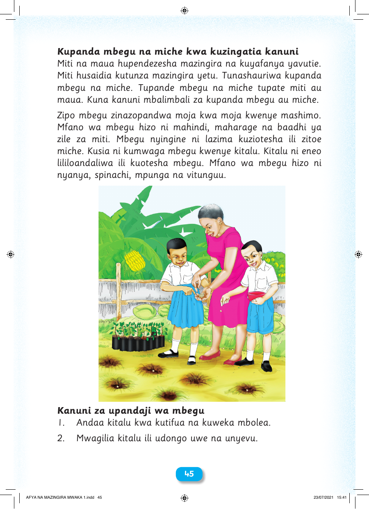

Kupanda mbegu na miche kwa kuzingatia kanuni Miti na maua hupendezesha mazingira na kuyafanya yavutie. Miti husaidia kutunza mazingira yetu. Tunashauriwa kupanda mbegu na miche. Tupande mbegu na miche tupate miti au maua. Kuna kanuni mbalimbali za kupanda mbegu au miche. Zipo mbegu zinazopandwa moja kwa moja kwenye mashimo. Mfano wa mbegu hizo ni mahindi, maharage na baadhi ya zile za miti. Mbegu nyingine ni lazima kuziotesha ili zitoe miche. Kusia ni kumwaga mbegu kwenye kitalu. Kitalu ni eneo lililoandaliwa ili kuotesha mbegu. Mfano wa mbegu hizo ni nyanya, spinachi, mpunga na vitunguu. Kanuni za upandaji wa mbegu 1. Andaa kitalu kwa kutifua na kuweka mbolea. 2. Mwagilia kitalu ili udongo uwe na unyevu. 4455 AFYA NA MAZINGIRA MWAKA 1.indd 45 23/07/2021 15:41